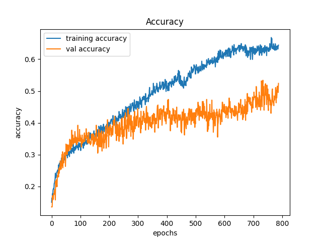
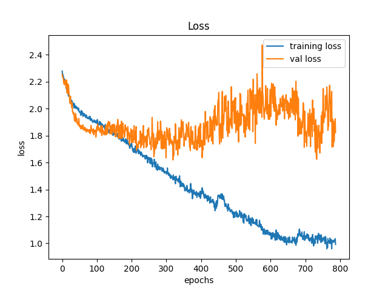

Uma rede neural convolucional é uma arquitetura que utiliza de técnicas para reconhecer padrões, muito usada para criar modelos que reconhecem imagens. Esse algoritmo de aprendizado profundo contém três camadas principais que são:
O modelo usado é do modo Sequential, i,e. aplica as camadas em sequência. O padrão repetido três vezes foi a aplicação de Conv2d, MaxPooling2d, Dropout e após essas repetições foi aplicada uma camada de Flatten e Dense. O dataset utilizado foi o de raças de cachorros. Nesse dataset foi feito um tratamento nas imagens deixando ela em preto e branco e aplicando o filtro de Blur e um filtro de SobelXY. Esse um dos resultados:
Apesar dos resultados não serem muito bons houve um progresso em comparação com os modelos anteriores, além do que o dataset de raça de cachorro é bem complexo pois possui muito ruído e nem em todas imagens tem o contorno do animal, a variedade de cores nas imagens e falta de padrão no sentido de estar centralizado dificultou muito o aprendizado.
 
https://www.youtube.com/watch?v=dFdMyUbtKM4
https://keras.io/examples/vision/image_classification_from_scratch/
https://curiousily.com/posts/hackers-guide-to-fixing-underfitting-and-overfitting-models/
https://devcenter.heroku.com/articles/build-docker-images-heroku-yml
https://wavesofvoqueric.com/software/2020/03/31/19/29/opencv-image-to-tensorflow-tensor/
https://data-flair.training/blogs/python-project-traffic-signs-recognition/
https://www.youtube.com/watch?v=pAhPiF3yiXI
https://www.youtube.com/watch?v=IubEtS2JAiY&list=PLZbbT5o_s2xrwRnXk_yCPtnqqo4_u2YGL&index=2
https://www.youtube.com/watch?v=FK77zZxaBoI
https://www.youtube.com/watch?v=YRhxdVk_sIs
https://www.youtube.com/watch?v=83LYR-1IcjA
https://keras.io/guides/functional_api/
https://www.deeplearningbook.com.br/introducao-as-redes-neurais-convolucionais/